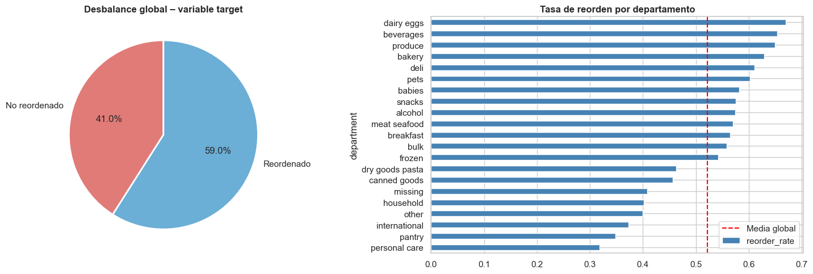
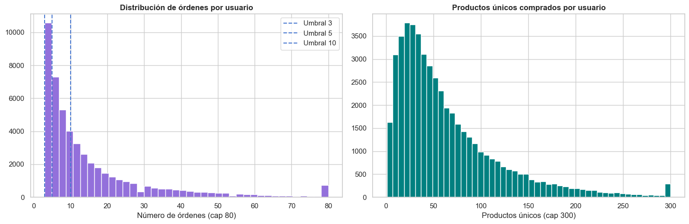
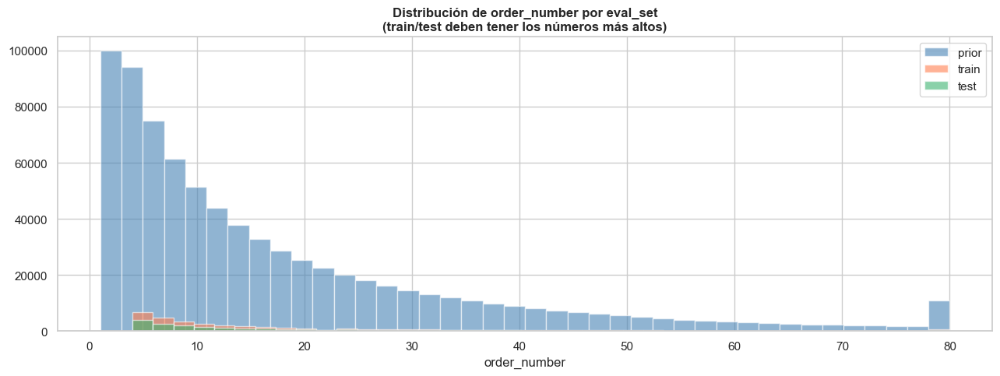
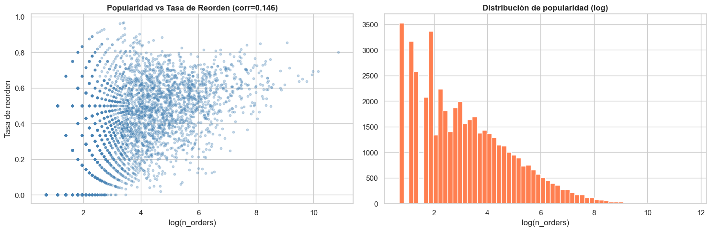

| Riesgo | Métrica clave | Severidad | Acción sugerida |
|---|---|---|---|
| Desbalance de clases | Ratio 0:1 = 0.69 | BAJA | class_weight / scale_pos_weight en el modelo |
| Alta cardinalidad | 49,688 productos | ALTA | Filtrar productos con < 50 apariciones para el MVP |
| Sparsity de usuarios | Sparsity media = 99.8692% | ALTA | Filtrar usuarios con < 5 órdenes / popularidad como fallback |
| Data leakage temporal | Resultado: OK | OK | Estructura prior/train/test respetada ✅ |
| Sesgo hacia productos populares | Top 1% = 41.9% compras | MEDIA | Incluir features de popularidad relativa al usuario |




